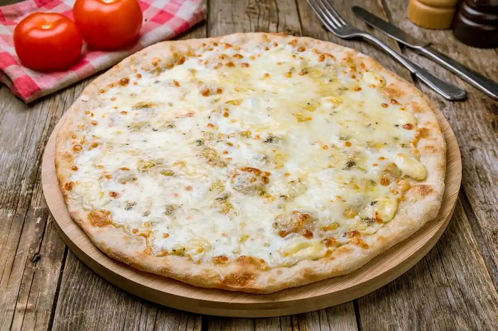

Pizza cuatro quesos

La pizza cuatro quesos es una preparación clásica que lleva el queso al centro de la receta. Esta versión combina mozzarella, cheddar, queso azul y parmesano para conseguir diferentes sabores y texturas en cada bocado. Es una receta especialmente adecuada para nuestra sección Tapa arterias, donde buscamos preparaciones abundantes y exageradas.